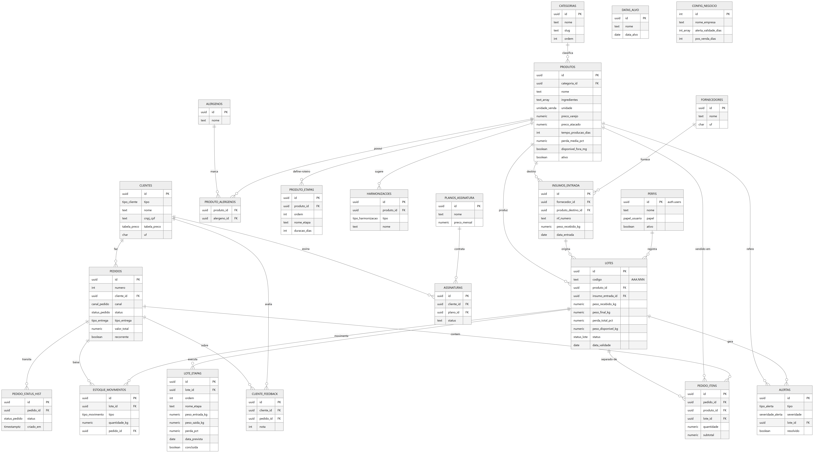

A Charcutaria Mantovani é uma microempresa artesanal localizada no bairro Prado, em Belo Horizonte/MG, formada por apenas duas pessoas (o proprietário Douglas, formado em gastronomia, e sua esposa). A empresa produz embutidos, defumados, curados e maturados (linguiças, bacons, salames, pastrami, salmão defumado, copa maturada, presunto cru, entre outros) e atende tanto pessoa jurídica (restaurantes, padarias, empórios e casas de eventos) quanto pessoa física (cliente final na loja, via WhatsApp e redes sociais).
A pequena equipe acumula múltiplos papéis (produção, atendimento, marketing, financeiro e logística) e enfrenta dificuldades específicas que sistemas genéricos de gestão (como o Bling, hoje utilizado apenas para emissão de nota fiscal e controle administrativo) não conseguem resolver:
AAA.NNN, ex.:
026.015).O sistema deve ser mobile-first, pois Douglas e sua esposa operam predominantemente pelo celular durante a produção e o atendimento.
Para Douglas e a equipe da Charcutaria Mantovani, que precisam controlar a produção artesanal por lote, mensurar perdas, monitorar validades, agilizar o atendimento e ampliar a divulgação dos produtos sem perder o toque humano da marca, o MantovaniHub é uma plataforma digital de gestão integrada e relacionamento com o cliente que automatiza o registro de lotes e perdas, alerta vencimentos, oferece cardápio digital com fotos e ingredientes, integra um marketplace ao site institucional e qualifica o atendimento via WhatsApp — preservando o caráter artesanal e personalizado que diferencia a Mantovani no mercado.
| Persona | Descrição | Objetivos | Dores |
|---|---|---|---|
| Douglas (Mestre Charcuteiro / Proprietário) | Formado em gastronomia, é o responsável pela produção, criação de receitas, compras de insumos e parte do atendimento ao cliente. Trabalha predominantemente no celular, com as mãos na massa (literalmente). | Registrar a produção e as perdas de forma rápida, do próprio celular, sem interromper o fluxo de produção; ter histórico mensal por produto; ser avisado quando um lote estiver perto de vencer; reduzir o tempo gasto respondendo dúvidas repetidas no WhatsApp. | Hoje o controle é visual e em planilhas Excel separadas (ficha técnica em uma, produção em outra); o Bling é genérico demais e exige login no desktop; não consegue medir quanto produz de cada item por mês; produtos vencem na geladeira sem aviso; o telefone toca no meio da produção e ele precisa parar para responder. |
| Esposa de Douglas (Gestora / Administradora) | Cuida do administrativo, financeiro, emissão de nota fiscal e ajuda no atendimento. Tem apoio da cunhada para o Instagram. | Centralizar dados em um único lugar; emitir relatórios de faturamento e produção; acompanhar estoque em tempo real; gerenciar o clube de assinatura quando ele entrar no ar. | Múltiplas planilhas desconectadas; precisa do desktop para o Bling enquanto o restante da operação acontece no celular; falta de visão consolidada entre produção, vendas e estoque. |
| Chef / Comprador (Cliente Pessoa Jurídica) | Chef de restaurante, padaria, empório ou casa de eventos. Compra em maior volume e com maior recorrência; representa o canal de maior faturamento da Mantovani. Pode ser de MG ou de outros estados (ES, SP etc.). | Consultar rapidamente a tabela de produtos com ingredientes e disponibilidade; fazer pedidos recorrentes de forma ágil; negociar amostras e novos produtos; compor o próprio cardápio com os produtos da Mantovani. | Precisa esperar resposta do WhatsApp (que pode demorar quando Douglas está produzindo); não tem como consultar a ficha de ingredientes por conta própria; depende de catálogo PDF e de boca a boca para conhecer novidades. |
| Consumidor Final (Cliente Pessoa Física) | Apreciador de charcutaria, normalmente atraído por Instagram, indicação ou pela loja física. Compra ticket menor, mas com margem maior. Pode ser alérgico a algum ingrediente ou ter restrição (pimenta, glúten etc.). | Conhecer o que é cada produto (foto, descrição e ingredientes antes de comprar); comprar pelo site/WhatsApp e receber em casa; receber sugestões de harmonização (queijos, vinhos); confiar na qualidade e no caráter artesanal do produto. | O cardápio atual só tem nome e preço — não sabe o que é uma “coppa”; precisa perguntar ingrediente a ingrediente quando tem alergia; não tem opção de comprar pelo site (atualmente desativado); demora para receber resposta do WhatsApp. |
O Product Backlog do MantovaniHub reúne 22 Histórias de Usuário (HU), superando com folga o requisito mínimo do modelo. As histórias HU001–HU014 derivam da 1ª entrevista com o cliente (14/04/2026); as histórias HU015–HU022 foram incorporadas na Versão 2.0 a partir do feedback do 2º encontro com o CEO Douglas Mantovani.
Título: Cadastro de produto e ficha técnica História: COMO Douglas (proprietário/charcuteiro) GOSTARIA DE cadastrar cada produto da charcutaria com nome, descrição, foto, categoria (fresco / defumado / curado / maturado), tempo médio de produção, ingredientes, preço de venda e percentual médio de perda POIS ASSIM terei uma base única que alimenta o cardápio digital, o controle de produção e os relatórios financeiros.
Critérios de Aceite:
Título: Registrar recebimento de insumo e abrir lote
História: COMO Douglas GOSTARIA DE registrar pelo
celular o recebimento da matéria-prima (carne/peixe), informando
fornecedor, peso conferido, nota fiscal e o produto-destino, gerando
automaticamente um número de lote no padrão AAA.NNN POIS
ASSIM tenho rastreabilidade do insumo até o produto final, atendendo
inclusive à vigilância sanitária.
Critérios de Aceite:
AAA.NNN (ex.: 026.015), onde
AAA são os três últimos dígitos do ano e NNN é
sequencial.Título: Apontamento das etapas de produção História: COMO Douglas GOSTARIA DE registrar as pesagens em cada etapa do processo (limpeza, cura, defumação/maturação, embalagem) por lote POIS ASSIM o sistema calcula automaticamente a perda absoluta (kg) e percentual (%) de cada etapa e do processo total.
Critérios de Aceite:
peso_recebido,
peso_após_limpeza e peso_final_pronto.Título: Relatório consolidado de produção História: COMO Douglas (e a esposa, gestora) GOSTARIA DE visualizar quantos quilos de cada produto foram produzidos no mês, qual foi a perda média e o histórico mês a mês POIS ASSIM consigo planejar a produção para datas comemorativas (Dia das Mães, Natal) e revisar preços de venda com base na perda real.
Critérios de Aceite:
Título: Alerta de validade próxima História: COMO Douglas GOSTARIA DE receber notificações quando um lote em estoque estiver a 30, 15 e 1 dia(s) de vencer POIS ASSIM consigo priorizar a venda, criar promoções para o consumidor final e evitar descarte de produto.
Critérios de Aceite:
Título: Cardápio digital interativo História: COMO consumidor final (cliente pessoa física) GOSTARIA DE consultar o cardápio da Charcutaria com fotos, descrição, ingredientes e preço, separado por categoria POIS ASSIM entendo o que é cada produto (coppa, pastrami, salame), evito ingredientes aos quais sou alérgico e decido a compra com segurança.
Critérios de Aceite:
Título: Compra pelo site institucional História: COMO consumidor final GOSTARIA DE montar um pedido no site da Charcutaria Mantovani, escolher a forma de entrega e pagar via Pix ou cartão POIS ASSIM compro com autonomia, sem depender de horário de atendimento humano no WhatsApp.
Critérios de Aceite:
Título: Bot de qualificação de atendimento História: COMO Douglas GOSTARIA DE que perguntas frequentes (preço, prazo, entrega, ingredientes, formas de pagamento) sejam respondidas automaticamente no WhatsApp, com transferência para uma pessoa humana no momento do fechamento POIS ASSIM consigo focar na produção e responder pessoalmente apenas as conversas que precisam do meu olhar — sem perder o tom humano da marca.
Critérios de Aceite:
Título: Pós-venda automatizado com toque humano História: COMO Douglas GOSTARIA DE que o sistema dispare uma mensagem alguns dias após a entrega perguntando se o cliente experimentou e o que achou, com texto personalizado POIS ASSIM mantenho o relacionamento sem precisar lembrar manualmente de cada cliente, e ainda colho feedback sobre os produtos.
Critérios de Aceite:
Título: Clube de assinatura com harmonização História: COMO consumidor final GOSTARIA DE assinar um clube mensal da Charcutaria Mantovani com diferentes níveis (Premium, Intermediário, Essencial) que combinam charcutaria com queijos e vinhos parceiros POIS ASSIM recebo uma curadoria de produtos artesanais todo mês, sem precisar escolher item a item.
Critérios de Aceite:
Título: Sistema de recomendação de harmonização História: COMO consumidor final GOSTARIA DE ver sugestões de harmonização (vinhos, queijos, pães) ao escolher um produto de charcutaria no cardápio digital POIS ASSIM componho uma experiência completa e a Mantovani aumenta o ticket médio do pedido.
Critérios de Aceite:
Título: Site institucional contando o processo História: COMO consumidor final GOSTARIA DE ler/assistir como cada produto é feito, em quanto tempo, com quais ingredientes e por que ele é artesanal POIS ASSIM compreendo o valor do produto e o porquê do preço, deixando de questionar “por que é caro”.
Critérios de Aceite:
Título: Visualização do estoque por produto e lote História: COMO esposa do Douglas (gestora) GOSTARIA DE consultar do celular o estoque atual da loja, agrupado por produto e detalhado por lote (com peso e validade) POIS ASSIM respondo rapidamente clientes que pedem pronta-entrega e tomo decisões de venda informadas.
Critérios de Aceite:
Título: Instalação da plataforma como aplicativo no celular História: COMO consumidor final e Douglas (proprietário) GOSTARIA DE instalar o MantovaniHub na tela inicial do meu celular, com ícone próprio e funcionamento parecido com um app nativo, sem precisar baixar nada da loja de aplicativos POIS ASSIM acesso o cardápio e o painel mais rapidamente, recebo notificações push e tenho uma experiência mais próxima de um app.
Critérios de Aceite:
Histórias incorporadas na Versão 2.0 (feedback do 2º encontro com o CEO). As oito histórias a seguir endereçam diretamente os pontos levantados por Douglas: alerta de produção (HU016), resumo do mês (HU017), cadastro que gera estoque (HU001 + HU009/HU019) e cardápio com ficha técnica e harmonização (HU006/HU011), além de fundamentos de segurança, relacionamento e configuração que sustentam a operação real.
Título: Login seguro e perfis de acesso História: COMO Douglas (proprietário) e a esposa (gestora) GOSTARIA DE acessar o painel administrativo com login protegido por senha e perfis de acesso distintos (administrador, gestor e produção) POIS ASSIM protejo os dados sensíveis do negócio (custos, clientes, faturamento) e cada pessoa vê apenas o que é pertinente à sua função.
Critérios de Aceite:
Título: Alertas de produção e agenda de maturação História: COMO Douglas (charcuteiro) GOSTARIA DE receber alertas quando um lote precisar avançar para a próxima etapa (virar a peça na cura, iniciar a defumação, embalar) e quando eu precisar iniciar a produção de um item de ciclo longo (copa maturada ≈ 120 dias, presunto cru ≥ 180 dias) para chegar a tempo de uma data comemorativa POIS ASSIM nenhum lote “passa do ponto” nem falta produto nas datas de maior venda (Dia das Mães, Natal), mesmo com a produção dependendo da memória.
Critérios de Aceite:
Título: Painel-resumo do mês (visão executiva) História: COMO Douglas e a esposa (gestora) GOSTARIA DE abrir o sistema e ver, numa única tela, o resumo do mês — total produzido (kg), perda média (%), número de lotes, produtos a vencer, pedidos em aberto e os produtos mais produzidos POIS ASSIM tenho a saúde do negócio em segundos, sem precisar gerar relatórios, e decido onde agir primeiro.
Critérios de Aceite:
Título: Cadastro e histórico de clientes (PF e PJ) História: COMO a esposa de Douglas (gestora) GOSTARIA DE cadastrar clientes pessoa física e jurídica com dados de contato, endereço e tipo, e visualizar o histórico de pedidos e feedbacks de cada um POIS ASSIM personalizo o atendimento, identifico os melhores clientes (PJ recorrentes) e mantenho o relacionamento humano que diferencia a marca.
Critérios de Aceite:
Título: Acompanhamento de pedidos em quadro História: COMO a esposa de Douglas (gestora) GOSTARIA DE visualizar e gerenciar os pedidos num quadro por status (Recebido → Em separação → Pronto → Entregue/Retirado), movendo o pedido conforme ele avança POIS ASSIM nenhum pedido é esquecido, a separação é organizada e o cliente recebe no prazo.
Critérios de Aceite:
Título: Catálogo de atacado para clientes pessoa jurídica História: COMO chef/comprador (cliente pessoa jurídica) GOSTARIA DE consultar uma tabela de produtos com preço de atacado, disponibilidade atual e ficha de ingredientes, e montar um pedido (inclusive recorrente) POIS ASSIM faço minhas compras com autonomia, sem depender do horário de atendimento humano, e componho meu próprio cardápio com os produtos da Mantovani.
Critérios de Aceite:
Título: Consulta de rastreabilidade do lote via QR Code História: COMO Douglas (e, indiretamente, a vigilância sanitária) GOSTARIA DE escanear o QR Code da etiqueta de um lote e ver toda a sua linha do tempo (insumo de origem, fornecedor, NF, etapas, pesagens, perdas, validade e destino de venda) POIS ASSIM atendo às exigências sanitárias e identifico rapidamente a origem de qualquer produto em caso de necessidade.
Critérios de Aceite:
Título: Parametrização do sistema e preferências de alerta História: COMO Douglas (administrador) GOSTARIA DE configurar os parâmetros do negócio (dados da loja, categorias, alérgenos, prazos dos alertas de validade, canais de notificação e dias para pós-venda) num único lugar POIS ASSIM adapto o sistema à rotina da Mantovani sem depender de programador e mantenho regras consistentes em toda a plataforma.
Critérios de Aceite:
Os requisitos RF001–RF035 derivam das histórias originais; RF036–RF046 foram adicionados na Versão 2.0 (HU015–HU022); RF047–RF048 documentam recursos consolidados na implementação (central de notificações e upload de fotos).
| ID | Descrição | Origem |
|---|---|---|
| RF001 | Permitir o cadastro de produtos com nome, descrição, foto, categoria, ingredientes, tempo médio de produção, perda média e preço. | HU001 |
| RF002 | Permitir editar e desativar produtos preservando o histórico. | HU001 |
| RF003 | Permitir registrar a entrada de insumos (matéria-prima) com fornecedor, NF, peso e produto-destino. | HU002 |
| RF004 | Gerar automaticamente o número de lote no
formato AAA.NNN (ano + sequencial). |
HU002 |
| RF005 | Gerar etiqueta de lote (com QR Code) para impressão. | HU002 |
| RF006 | Permitir registrar pesagens em cada etapa da produção (limpeza, cura, defumação/maturação, embalagem). | HU003 |
| RF007 | Calcular automaticamente a perda absoluta (kg) e percentual (%) por etapa e total. | HU003 |
| RF008 | Emitir alerta visual quando a perda real divergir significativamente da perda média histórica. | HU003 |
| RF009 | Gerar relatórios mensais de produção por produto, com totais, perdas e número de lotes. | HU004 |
| RF010 | Permitir exportar relatórios em PDF e enviá-los por e-mail. | HU004 |
| RF011 | Disparar notificação push e/ou e-mail nos marcos de 30, 15 e 1 dia(s) antes do vencimento de cada lote. | HU005 |
| RF012 | Permitir gerar uma “lista de promoção” com lotes próximos do vencimento. | HU005 |
| RF013 | Permitir registrar descarte de produto vencido com motivo. | HU005 |
| RF014 | Disponibilizar um cardápio digital público com fotos, ingredientes, alérgenos e preço, com link compartilhável. | HU006 |
| RF015 | Permitir filtros por categoria e exclusão por alérgeno no cardápio. | HU006 |
| RF016 | Permitir adicionar produtos ao carrinho e fechar pedido pelo site. | HU007 |
| RF017 | Aceitar pagamento via Pix e cartão de crédito. | HU007 |
| RF018 | Oferecer entrega por motoboy (com cálculo por região) ou retirada na loja. | HU007 |
| RF019 | Enviar confirmação automática do pedido por e-mail e WhatsApp. | HU007 |
| RF020 | Baixar o estoque automaticamente ao confirmar o pedido. | HU007, HU013 |
| RF021 | Oferecer um bot de WhatsApp capaz de responder FAQ (preço, prazo, ingredientes, entrega, pagamento) com base no cardápio. | HU008 |
| RF022 | O bot deve transferir a conversa para um atendente humano ao sinalizar fechamento ou sair do escopo do FAQ. | HU008 |
| RF023 | Registrar conversas atendidas e gerar relatório de perguntas mais frequentes. | HU008 |
| RF024 | Disparar mensagem automática de pós-venda X dias após a entrega (X configurável). | HU009 |
| RF025 | Permitir registrar o feedback do cliente no perfil dele. | HU009 |
| RF026 | Oferecer planos de assinatura mensal (Essencial, Intermediário, Premium). | HU010 |
| RF027 | Realizar cobrança recorrente mensal por cartão de crédito. | HU010 |
| RF028 | Permitir ao assinante pausar, alterar ou cancelar a assinatura pelo painel do cliente. | HU010 |
| RF029 | Permitir cadastrar e exibir sugestões de harmonização por produto. | HU011 |
| RF030 | O site institucional deve apresentar páginas de história e processo, com texto, fotos e vídeos. | HU012 |
| RF031 | Exibir o estoque atual em tempo real, agrupado por produto e detalhado por lote. | HU013 |
| RF032 | Permitir lançamento manual de baixa de estoque (descarte, consumo interno). | HU013 |
| RF033 | Ser disponibilizado como PWA, com manifest, service worker, ícone e splash screen. | HU014 |
| RF034 | Manter cache offline do cardápio digital já visitado, permitindo consulta sem conexão. | HU014 |
| RF035 | Suportar notificações push via Web Push para usuários que concederem autorização. | HU014, HU005 |
| RF036 | Permitir autenticação por e-mail/senha, com sessão persistente e recuperação de senha. | HU015 |
| RF037 | Implementar perfis de acesso (Administrador, Gestor, Produção) com permissões distintas. | HU015 |
| RF038 | Permitir definir a duração de cada etapa por produto e calcular a data prevista de conclusão do lote. | HU016 |
| RF039 | Gerar alerta de produção quando um lote atingir a data prevista de mudança de etapa ou estiver atrasado. | HU016 |
| RF040 | Manter agenda de maturação e calcular regressivamente a data-limite de início a partir de datas-alvo. | HU016 |
| RF041 | Apresentar dashboard-resumo do mês com indicadores de produção, perdas, lotes, validades e pedidos. | HU017 |
| RF042 | Permitir o cadastro e a gestão de clientes PF/PJ, com histórico de pedidos e feedback. | HU018 |
| RF043 | Gerenciar pedidos em quadro kanban por status, registrando o histórico de transições. | HU019 |
| RF044 | Oferecer catálogo com tabela de preços de atacado e disponibilidade para clientes PJ autenticados. | HU020 |
| RF045 | Disponibilizar página de rastreabilidade de lote por QR Code, com linha do tempo e exportação em PDF. | HU021 |
| RF046 | Oferecer tela de configurações do negócio (empresa, categorias, alérgenos, alertas, canais), restrita ao Administrador. | HU022 |
| RF047 | Disponibilizar uma central de notificações no painel que agrega pedidos novos, validades próximas (≤ 7 dias) e alertas, com contador de não lidas e marcação individual/total de leitura. | HU017, HU005, HU019 |
| RF048 | Permitir o upload da foto do produto, armazenada em bucket de objetos (Supabase Storage), com URL pública vinculada ao produto. | HU001, HU006 |
As regras RN001–RN013 são do levantamento original; RN014–RN017 foram adicionadas na Versão 2.0; RN018 reflete o comportamento de sessão adotado na implementação.
| ID | Descrição | Relacionado a |
|---|---|---|
| RN001 | A numeração de lote segue o formato
AAA.NNN, onde AAA são os três últimos dígitos
do ano corrente e NNN é sequencial e único por
produto. |
HU002 |
| RN002 | Cada lote pertence a um único produto-destino e mantém o mesmo número da entrada da matéria-prima até a embalagem final. | HU002, HU003 |
| RN003 | O lote do fornecedor é distinto do lote interno da Mantovani, mas deve ser registrado para fins de rastreabilidade sanitária. | HU002 |
| RN004 | O percentual de perda real é específico de cada lote e não deve ser usado como valor fixo — a perda média do produto serve apenas como referência. | HU003 |
| RN005 | Um produto só fica disponível para venda no cardápio e no site após o registro do peso final do lote (etapa “embalagem concluída”). | HU003, HU006, HU013 |
| RN006 | A validade do produto começa a contar a partir da data de finalização do lote, não da data de entrada da matéria-prima. | HU005 |
| RN007 | Lotes com validade vencida são automaticamente removidos do estoque vendável e marcados para descarte. | HU005, HU013 |
| RN008 | O pagamento das vendas a clientes pessoa física com entrega é antecipado (Pix antes do envio do motoboy). | HU007 |
| RN009 | O bot de atendimento deve sempre se identificar como atendimento automatizado na primeira mensagem da conversa. | HU008 |
| RN010 | Conversas com intenção de fechamento de compra devem obrigatoriamente ser transferidas para atendente humano antes da confirmação do pagamento. | HU008 |
| RN011 | Os planos do clube de assinatura devem respeitar o tempo de produção dos produtos: itens de produção longa só entram em ciclos planejados com antecedência. | HU010 |
| RN012 | Clientes pessoa jurídica podem ter tabela de preços diferenciada (volume) em relação a clientes pessoa física. | HU007 |
| RN013 | Vendas para outros estados dependem de autorização sanitária — o sistema deve permitir marcar quais produtos podem ser comercializados fora de MG e bloquear os demais nesses pedidos. | HU007 |
| RN014 | Cada usuário possui um único perfil de acesso; operações sensíveis (exclusão, configurações e preços de custo) são restritas ao perfil Administrador. | HU015 |
| RN015 | A data-limite para iniciar a produção de um item é calculada como (data-alvo − soma das durações das etapas − margem de segurança), específica por produto. | HU016 |
| RN016 | Clientes PJ visualizam a tabela de preços de atacado; clientes PF visualizam a tabela de varejo (reforça a RN012). | HU020 |
| RN017 | A baixa de estoque na confirmação de um pedido segue a regra FEFO (First Expired, First Out) entre os lotes disponíveis do produto. | HU019, HU007, HU013 |
| RN018 | O logout encerra apenas a sessão do dispositivo atual (escopo local); as demais sessões do mesmo usuário permanecem ativas até o próprio logout ou a expiração do token. | HU015 |
| ID | Categoria | Descrição | Métrica |
|---|---|---|---|
| RNF001 | Usabilidade | A interface deve ser mobile-first, otimizada para smartphone. | Telas operacionais funcionam a partir de 360 px de largura. |
| RNF002 | Usabilidade | Cadastros operacionais devem ser concluídos com poucos toques. | Cada apontamento exige ≤ 5 interações. |
| RNF003 | Desempenho | O cardápio e o site devem carregar rapidamente no celular, mesmo em 3G/4G. | Primeira página ≤ 3 s em 4G. |
| RNF004 | Desempenho | Operações administrativas devem ter resposta praticamente instantânea. | Tempo de resposta ≤ 2 s. |
| RNF005 | Disponibilidade | O sistema deve estar disponível 24×7 para clientes finais. | Disponibilidade ≥ 99% ao mês. |
| RNF006 | Segurança | Pagamentos online por gateway certificado, sem armazenar dados de cartão. | Conformidade PCI-DSS via gateway (Stone, Pagar.me, Mercado Pago). |
| RNF007 | Segurança | Acesso ao painel deve exigir senha forte e suportar 2FA. | Senha ≥ 8 caracteres (letras, números, símbolos); 2FA opcional. |
| RNF008 | Segurança | Dados pessoais devem ser tratados conforme a LGPD. | Conformidade com a LGPD (Lei 13.709/2018). |
| RNF009 | Confiabilidade | Backups diários da base de dados, mantidos por ≥ 30 dias. | Backup automático diário; retenção ≥ 30 dias. |
| RNF010 | Compatibilidade | Funcionar nos principais navegadores em desktop e mobile. | Versões dos últimos 24 meses (Chrome, Safari, Firefox, Edge). |
| RNF011 | Manutenibilidade | Código modular, evoluindo cada frente sem regressões. | Arquitetura modular; cobertura de testes ≥ 70% em produção/estoque. |
| RNF012 | Integração | Integração com a API do WhatsApp Business para bot e pós-venda. | Uso oficial da WhatsApp Business API (Meta). |
| RNF013 | Integração | Integração futura com o Bling para sincronização fiscal/administrativa. | Conector/exportação compatível com a API do Bling. |
| RNF014 | Notificação | Notificações por push, e-mail e WhatsApp, conforme preferência do usuário. | Múltiplos canais configuráveis por usuário. |
| RNF015 | Acessibilidade | Cardápio e site devem seguir boas práticas de acessibilidade. | Conformidade WCAG 2.1 nível AA. |
| RNF016 | PWA | Entregue como PWA instalável, com uso offline parcial e push. | Manifest válido, service worker e Lighthouse PWA ≥ 90. |
O banco de dados do MantovaniHub foi implementado em PostgreSQL
(compatível com a plataforma Supabase, usada no deploy). Esta seção
apresenta o modelo lógico (entidades e relacionamentos), o diagrama
entidade-relacionamento e o modelo físico (script SQL de criação das
tabelas). O modelo não apenas armazena os dados, mas materializa as
regras de negócio do domínio: a geração do código de lote
AAA.NNN (RN001), o cálculo automático de perdas (RF007), o
semáforo de validade (HU005) e a regra FEFO de baixa de estoque
(RN017).
O modelo é composto por 22 tabelas, 2 visões, 2 funções com
gatilhos (triggers) e 14 tipos enumerados — que
restringem domínios como status_lote,
status_pedido, tipo_movimento,
severidade_alerta e papel_usuario diretamente
no banco —, organizados em sete domínios funcionais:
| Domínio | Tabelas | Histórias atendidas |
|---|---|---|
| Acesso e usuários | perfis |
HU015 |
| Catálogo de produtos | categorias, alergenos,
produtos, produto_alergenos,
produto_etapas, harmonizacoes |
HU001, HU006, HU011, HU022 |
| Suprimentos e produção | fornecedores, insumos_entrada,
lotes, lote_etapas |
HU002, HU003, HU016, HU021 |
| Estoque e alertas | estoque_movimentos, alertas,
datas_alvo |
HU005, HU013, HU016 |
| Clientes e vendas | clientes, cliente_feedback,
pedidos, pedido_itens,
pedido_status_hist |
HU007, HU009, HU018, HU019, HU020 |
| Clube de assinatura | planos_assinatura, assinaturas |
HU010 |
| Configuração | config_negocio |
HU022 |
produto_alergenos), a um roteiro de etapas
(produto_etapas, que define as durações para a agenda de
maturação) e a várias harmonizações (“Combina
com…”).insumos_entrada)
registra a matéria-prima recebida de um fornecedor e dá
origem a um lote interno. Cada lote
referencia um único produto-destino (RN002) e desdobra-se em várias
etapas de produção (lote_etapas), nas
quais as pesagens são registradas e as perdas calculadas.estoque_movimentos) vinculados
ao lote; o saldo disponível é materializado em
lotes.peso_disponivel_kg. Os alertas
(validade, produção, desvio de perda) referenciam o lote ou o produto de
origem.pedido_itens); cada item pode ser separado de um
lote específico (FEFO). As transições de status do
pedido são registradas em pedido_status_hist, e os
feedbacks ficam vinculados ao cliente e ao pedido.config_negocio (registro único) centraliza os parâmetros do
sistema (HU022).| Entidade | Propósito |
|---|---|
perfis |
Usuários administrativos com papel de acesso (admin/gestor/produção). |
categorias |
Categorias do cardápio (Defumados, Maturados, Curados, Linguiças…). |
alergenos |
Alérgenos cadastráveis (glúten, lactose, pimenta…). |
produtos |
Ficha técnica: nome, ingredientes, foto, unidade, preços varejo/atacado, perda média. |
produto_etapas |
Roteiro de produção por produto (etapas e durações). |
harmonizacoes |
Sugestões de harmonização (vinho, queijo, pão, cerveja). |
fornecedores |
Fornecedores de matéria-prima. |
insumos_entrada |
Recebimento de matéria-prima; origem do lote. |
lotes |
Lote interno AAA.NNN, com pesos, perdas calculadas,
validade e status. |
lote_etapas |
Pesagens por etapa, com perda kg/% e datas prevista/concluída. |
estoque_movimentos |
Livro-razão de entradas e saídas de estoque. |
alertas |
Alertas de validade, produção e desvio de perda. |
datas_alvo |
Datas comemorativas para o cálculo regressivo de produção. |
clientes |
Clientes PF/PJ, com tabela de preço aplicável. |
pedidos / pedido_itens |
Pedidos e seus itens; baixa de estoque por FEFO. |
pedido_status_hist |
Histórico de transições de status (kanban). |
planos_assinatura / assinaturas |
Clube de assinatura e contratos. |
config_negocio |
Parâmetros do negócio e preferências de alerta. |
trg_gerar_codigo_lote executa a função
fn_gerar_codigo_lote(), que monta AAA.NNN a
partir dos três últimos dígitos do ano e de um sequencial único por
produto/ano.perda_total_kg, perda_total_pct (em
lotes) e perda_kg, perda_pct (em
lote_etapas) são colunas geradas
(GENERATED ALWAYS AS … STORED), garantindo consistência sem
código de aplicação.em_estoque, o gatilho
trg_lote_para_estoque inicializa o saldo disponível e
registra o movimento de entrada.vw_estoque_atual classifica
cada lote em verde / amarelo (≤ 30 dias) / vermelho (≤ 7 dias) /
vencido.vw_producao_mensal consolida, por produto e mês, o total
produzido, o total perdido, a perda média e o número de lotes.A figura a seguir apresenta o modelo entidade-relacionamento completo, com as chaves primárias (PK), estrangeiras (FK) e os principais atributos de cada entidade.

O script a seguir cria todo o modelo no PostgreSQL (validado em ambiente PostgreSQL real). Inclui extensões, tipos enumerados, tabelas, restrições de integridade, funções, gatilhos, visões e índices.
-- =====================================================================
-- MantovaniHub — Plataforma de Gestão Integrada para Charcutaria
-- Modelo Físico do Banco de Dados (PostgreSQL / Supabase)
-- Projeto: Charcutaria Mantovani — UC Modelagem de Software 2026/1
-- Versão: 2.0
--
-- Convenções:
-- * Chaves primárias: uuid (gen_random_uuid()).
-- * Pesos em quilogramas: numeric(10,3). Preços em reais: numeric(10,2).
-- * Nomes de tabelas e colunas em português (domínio da charcutaria).
-- * Perdas calculadas por colunas GENERATED para garantir consistência.
-- =====================================================================
create extension if not exists "pgcrypto"; -- gen_random_uuid()
-- ---------------------------------------------------------------------
-- 1. TIPOS ENUMERADOS (domínio controlado)
-- ---------------------------------------------------------------------
create type papel_usuario as enum ('admin', 'gestor', 'producao');
create type unidade_venda as enum ('kg', '100g', '500g', 'unidade');
create type tipo_insumo as enum ('carne', 'peixe', 'outro');
create type status_lote as enum ('em_producao', 'pronto', 'em_estoque', 'vendido', 'descartado');
create type tipo_movimento as enum ('entrada', 'venda', 'baixa_manual', 'descarte', 'ajuste');
create type tipo_alerta as enum ('validade', 'producao', 'estoque_baixo', 'desvio_perda');
create type severidade_alerta as enum ('info', 'atencao', 'critico');
create type tipo_cliente as enum ('pf', 'pj');
create type tabela_preco as enum ('varejo', 'atacado');
create type canal_pedido as enum ('site', 'whatsapp', 'balcao');
create type status_pedido as enum ('recebido', 'separacao', 'pronto', 'entregue', 'cancelado');
create type tipo_entrega as enum ('motoboy', 'retirada');
create type forma_pagamento as enum ('pix', 'cartao', 'dinheiro');
create type tipo_harmonizacao as enum ('vinho', 'queijo', 'pao', 'cerveja', 'outro');
-- ---------------------------------------------------------------------
-- 2. ACESSO E USUÁRIOS (HU015 / RF036 / RF037 / RN014)
-- Integra-se ao Supabase Auth (auth.users). Cada perfil estende um
-- usuário autenticado com seu papel no sistema.
-- ---------------------------------------------------------------------
create table perfis (
id uuid primary key references auth.users(id) on delete cascade,
nome text not null,
papel papel_usuario not null default 'producao',
telefone text,
ativo boolean not null default true,
ultimo_acesso timestamptz,
criado_em timestamptz not null default now()
);
comment on table perfis is 'Usuários administrativos (Douglas, esposa, produção) com papel de acesso.';
-- ---------------------------------------------------------------------
-- 3. CATÁLOGO DE PRODUTOS (HU001 / HU006 / HU011 / HU021 / HU022)
-- ---------------------------------------------------------------------
create table categorias (
id uuid primary key default gen_random_uuid(),
nome text not null unique,
slug text not null unique,
ordem int not null default 0,
ativo boolean not null default true
);
comment on table categorias is 'Categorias do cardápio: Defumados, Maturados, Curados, Linguiças, Assados, Fermentados, Tábua de frios, etc.';
create table alergenos (
id uuid primary key default gen_random_uuid(),
nome text not null unique -- Glúten, Lactose, Pimenta, Crustáceos...
);
create table produtos (
id uuid primary key default gen_random_uuid(),
categoria_id uuid not null references categorias(id),
nome text not null,
slug text not null unique,
descricao text,
ficha_tecnica text, -- modo de produção / curiosidades
ingredientes text[] not null default '{}', -- lista de ingredientes
foto_url text,
unidade_venda unidade_venda not null default '100g',
preco_varejo numeric(10,2) not null default 0,
preco_atacado numeric(10,2), -- tabela PJ (RN012/RN016)
tempo_producao_dias int not null default 1, -- HU001
perda_media_pct numeric(5,2) not null default 0
check (perda_media_pct between 0 and 100), -- HU001
disponivel_fora_mg boolean not null default false, -- RN013
sazonal boolean not null default false,
ativo boolean not null default true, -- desativar sem excluir (HU001)
criado_em timestamptz not null default now()
);
comment on column produtos.perda_media_pct is 'Perda média histórica (referência, não valor fixo — RN004).';
-- N:N produto <-> alérgeno
create table produto_alergenos (
produto_id uuid not null references produtos(id) on delete cascade,
alergeno_id uuid not null references alergenos(id) on delete cascade,
primary key (produto_id, alergeno_id)
);
-- Roteiro de produção por produto: durações de cada etapa (HU016 / RF038)
create table produto_etapas (
id uuid primary key default gen_random_uuid(),
produto_id uuid not null references produtos(id) on delete cascade,
ordem int not null,
nome_etapa text not null, -- Limpeza, Cura, Defumação, Maturação, Embalagem
duracao_dias int not null default 0,
unique (produto_id, ordem)
);
-- Sugestões de harmonização "Combina com..." (HU011 / RF029)
create table harmonizacoes (
id uuid primary key default gen_random_uuid(),
produto_id uuid not null references produtos(id) on delete cascade,
tipo tipo_harmonizacao not null,
nome text not null, -- "Vinho Malbec", "Queijo Canastra", "Pão sourdough"
descricao text,
foto_url text
);
-- ---------------------------------------------------------------------
-- 4. SUPRIMENTOS E PRODUÇÃO (HU002 / HU003 / RF003-RF008 / RN001-RN006)
-- ---------------------------------------------------------------------
create table fornecedores (
id uuid primary key default gen_random_uuid(),
nome text not null,
contato text,
cidade text,
uf char(2)
);
-- Entrada de matéria-prima → origem do lote (HU002)
create table insumos_entrada (
id uuid primary key default gen_random_uuid(),
fornecedor_id uuid references fornecedores(id),
produto_destino_id uuid not null references produtos(id),
tipo_insumo tipo_insumo not null default 'carne',
nf_numero text,
lote_fornecedor text, -- distinto do lote interno (RN003)
peso_recebido_kg numeric(10,3) not null check (peso_recebido_kg > 0),
data_entrada date not null default current_date,
foto_nf_url text,
observacao text,
criado_em timestamptz not null default now()
);
-- Lote interno (rastreabilidade AAA.NNN) — RN001/RN002
create table lotes (
id uuid primary key default gen_random_uuid(),
codigo text, -- AAA.NNN, sequencial por produto/ano (RN001), ex.: 026.015
ano int,
sequencial int,
produto_id uuid not null references produtos(id),
insumo_entrada_id uuid references insumos_entrada(id),
peso_recebido_kg numeric(10,3) not null check (peso_recebido_kg > 0),
peso_apos_limpeza_kg numeric(10,3),
peso_final_kg numeric(10,3),
-- Perdas calculadas automaticamente (RF007):
perda_total_kg numeric(10,3) generated always as
(case when peso_final_kg is not null then peso_recebido_kg - peso_final_kg end) stored,
perda_total_pct numeric(6,2) generated always as
(case when peso_final_kg is not null and peso_recebido_kg > 0
then round((peso_recebido_kg - peso_final_kg) / peso_recebido_kg * 100, 2) end) stored,
peso_disponivel_kg numeric(10,3) not null default 0, -- saldo em estoque (FEFO)
status status_lote not null default 'em_producao',
data_abertura date not null default current_date,
data_conclusao date, -- validade conta a partir daqui (RN006)
data_validade date,
created_by uuid references perfis(id),
criado_em timestamptz not null default now(),
unique (produto_id, ano, sequencial)
);
comment on table lotes is 'Lote interno com rastreabilidade do insumo ao produto final (RN002).';
-- Apontamento real das etapas + pesagens (HU003 / RF006) e datas previstas (HU016)
create table lote_etapas (
id uuid primary key default gen_random_uuid(),
lote_id uuid not null references lotes(id) on delete cascade,
ordem int not null,
nome_etapa text not null,
peso_entrada_kg numeric(10,3),
peso_saida_kg numeric(10,3),
perda_kg numeric(10,3) generated always as
(case when peso_entrada_kg is not null and peso_saida_kg is not null
then peso_entrada_kg - peso_saida_kg end) stored,
perda_pct numeric(6,2) generated always as
(case when peso_entrada_kg is not null and peso_saida_kg is not null and peso_entrada_kg > 0
then round((peso_entrada_kg - peso_saida_kg) / peso_entrada_kg * 100, 2) end) stored,
data_prevista date, -- agenda de maturação (HU016)
data_concluida date,
concluida boolean not null default false,
observacao text,
unique (lote_id, ordem)
);
-- ---------------------------------------------------------------------
-- 5. ESTOQUE — livro-razão de movimentos (HU013 / RF031 / RF032)
-- ---------------------------------------------------------------------
create table estoque_movimentos (
id uuid primary key default gen_random_uuid(),
lote_id uuid not null references lotes(id),
tipo tipo_movimento not null,
quantidade_kg numeric(10,3) not null, -- positivo entrada, negativo saída
motivo text,
pedido_id uuid, -- FK lógica p/ pedidos (saída por venda)
created_by uuid references perfis(id),
criado_em timestamptz not null default now()
);
comment on table estoque_movimentos is 'Histórico de entradas/saídas; o saldo materializado fica em lotes.peso_disponivel_kg.';
-- ---------------------------------------------------------------------
-- 6. ALERTAS E AGENDA DE PRODUÇÃO (HU005 / HU016 / RF011 / RF039 / RF040)
-- ---------------------------------------------------------------------
create table alertas (
id uuid primary key default gen_random_uuid(),
tipo tipo_alerta not null,
severidade severidade_alerta not null default 'info',
titulo text not null,
mensagem text,
lote_id uuid references lotes(id) on delete cascade,
produto_id uuid references produtos(id) on delete cascade,
data_referencia date,
lido boolean not null default false,
resolvido boolean not null default false,
criado_em timestamptz not null default now()
);
-- Datas comemorativas para cálculo regressivo de início de produção (HU016 / RN015)
create table datas_alvo (
id uuid primary key default gen_random_uuid(),
nome text not null, -- "Natal 2026", "Dia das Mães"
data_alvo date not null,
descricao text
);
-- ---------------------------------------------------------------------
-- 7. CLIENTES (CRM) (HU018 / RF042 / RN012)
-- ---------------------------------------------------------------------
create table clientes (
id uuid primary key default gen_random_uuid(),
tipo tipo_cliente not null default 'pf',
nome text not null,
razao_social text,
cnpj_cpf text,
telefone text,
email text,
endereco text,
cidade text,
uf char(2),
tabela_preco tabela_preco not null default 'varejo', -- RN016
observacoes text,
criado_em timestamptz not null default now()
);
create table cliente_feedback (
id uuid primary key default gen_random_uuid(),
cliente_id uuid not null references clientes(id) on delete cascade,
pedido_id uuid,
nota int check (nota between 1 and 5),
comentario text,
criado_em timestamptz not null default now()
);
-- ---------------------------------------------------------------------
-- 8. PEDIDOS E VENDAS (HU007 / HU019 / HU020 / RF016-RF020 / RF043 / RN017)
-- ---------------------------------------------------------------------
create table pedidos (
id uuid primary key default gen_random_uuid(),
numero serial unique,
cliente_id uuid references clientes(id),
canal canal_pedido not null default 'site',
status status_pedido not null default 'recebido',
tipo_entrega tipo_entrega not null default 'retirada',
endereco_entrega text,
valor_produtos numeric(10,2) not null default 0,
valor_entrega numeric(10,2) not null default 0,
valor_total numeric(10,2) generated always as (valor_produtos + valor_entrega) stored,
forma_pagamento forma_pagamento,
pago boolean not null default false,
recorrente boolean not null default false, -- pedido recorrente PJ (HU020)
observacao text,
criado_em timestamptz not null default now()
);
create table pedido_itens (
id uuid primary key default gen_random_uuid(),
pedido_id uuid not null references pedidos(id) on delete cascade,
produto_id uuid not null references produtos(id),
lote_id uuid references lotes(id), -- definido na separação (FEFO)
quantidade numeric(10,3) not null check (quantidade > 0),
preco_unitario numeric(10,2) not null,
subtotal numeric(10,2) generated always as (quantidade * preco_unitario) stored
);
create table pedido_status_hist (
id uuid primary key default gen_random_uuid(),
pedido_id uuid not null references pedidos(id) on delete cascade,
status status_pedido not null,
usuario_id uuid references perfis(id),
criado_em timestamptz not null default now()
);
-- FK lógica de estoque_movimentos.pedido_id (criada após pedidos existir)
alter table estoque_movimentos
add constraint fk_mov_pedido foreign key (pedido_id) references pedidos(id) on delete set null;
alter table cliente_feedback
add constraint fk_feedback_pedido foreign key (pedido_id) references pedidos(id) on delete set null;
-- ---------------------------------------------------------------------
-- 9. CLUBE DE ASSINATURA (HU010 / RF026-RF028) — vitrine + modelo
-- ---------------------------------------------------------------------
create table planos_assinatura (
id uuid primary key default gen_random_uuid(),
nome text not null, -- Essencial, Intermediário, Premium
descricao text,
preco_mensal numeric(10,2) not null,
beneficios text[] not null default '{}',
ativo boolean not null default true
);
create table assinaturas (
id uuid primary key default gen_random_uuid(),
cliente_id uuid not null references clientes(id),
plano_id uuid not null references planos_assinatura(id),
status text not null default 'ativa', -- ativa, pausada, cancelada
data_inicio date not null default current_date,
proximo_ciclo date
);
-- ---------------------------------------------------------------------
-- 10. CONFIGURAÇÕES DO NEGÓCIO (HU022 / RF046)
-- ---------------------------------------------------------------------
create table config_negocio (
id int primary key default 1 check (id = 1), -- singleton
nome_empresa text not null default 'Charcutaria Mantovani',
whatsapp text default '5531991057351',
email text default 'charcutariamantovani@gmail.com',
instagram text default 'charcutariamantovani',
endereco text default 'Bairro Prado, Belo Horizonte/MG',
link_cardapio text,
alerta_validade_dias int[] not null default '{30,15,1}',
pos_venda_dias int not null default 5,
canais_notificacao jsonb not null default '{"push":true,"email":true,"whatsapp":false}'
);
-- ---------------------------------------------------------------------
-- 11. FUNÇÕES E GATILHOS
-- ---------------------------------------------------------------------
-- Geração automática do código de lote no formato AAA.NNN (RN001):
-- AAA = três últimos dígitos do ano; NNN = sequencial por produto/ano.
create or replace function fn_gerar_codigo_lote() returns trigger as $$
declare
v_ano int := extract(year from coalesce(new.data_abertura, current_date));
v_seq int;
begin
if new.codigo is not null then
return new;
end if;
select coalesce(max(sequencial), 0) + 1 into v_seq
from lotes
where produto_id = new.produto_id and ano = v_ano;
new.ano := v_ano;
new.sequencial := v_seq;
new.codigo := lpad((v_ano % 1000)::text, 3, '0') || '.' || lpad(v_seq::text, 3, '0');
return new;
end;
$$ language plpgsql;
create trigger trg_gerar_codigo_lote
before insert on lotes
for each row execute function fn_gerar_codigo_lote();
-- Ao finalizar o lote (status 'em_estoque'), inicializa o saldo disponível.
create or replace function fn_lote_para_estoque() returns trigger as $$
begin
if new.status = 'em_estoque' and (old.status is distinct from 'em_estoque') then
new.peso_disponivel_kg := coalesce(new.peso_final_kg, 0);
insert into estoque_movimentos (lote_id, tipo, quantidade_kg, motivo, created_by)
values (new.id, 'entrada', coalesce(new.peso_final_kg, 0), 'Lote concluído', new.created_by);
end if;
return new;
end;
$$ language plpgsql;
create trigger trg_lote_para_estoque
before update on lotes
for each row execute function fn_lote_para_estoque();
-- ---------------------------------------------------------------------
-- 12. VISÕES (suporte a estoque em tempo real e relatórios)
-- ---------------------------------------------------------------------
-- Estoque atual por lote, com semáforo de validade (HU005 / HU013)
create view vw_estoque_atual as
select l.id as lote_id, l.codigo, p.id as produto_id, p.nome as produto,
c.nome as categoria, l.peso_disponivel_kg, l.data_validade,
(l.data_validade - current_date) as dias_para_vencer,
case
when l.data_validade is null then 'sem_validade'
when l.data_validade < current_date then 'vencido'
when l.data_validade - current_date <= 7 then 'vermelho'
when l.data_validade - current_date <= 30 then 'amarelo'
else 'verde'
end as status_validade
from lotes l
join produtos p on p.id = l.produto_id
join categorias c on c.id = p.categoria_id
where l.status = 'em_estoque' and l.peso_disponivel_kg > 0;
-- Produção mensal consolidada por produto (HU004 / HU017)
create view vw_producao_mensal as
select p.id as produto_id, p.nome as produto, c.nome as categoria,
date_trunc('month', l.data_conclusao)::date as mes,
count(*) as num_lotes,
sum(l.peso_recebido_kg) as total_recebido_kg,
sum(l.peso_final_kg) as total_produzido_kg,
sum(l.perda_total_kg) as total_perdido_kg,
round(avg(l.perda_total_pct), 2) as perda_media_pct
from lotes l
join produtos p on p.id = l.produto_id
join categorias c on c.id = p.categoria_id
where l.data_conclusao is not null
group by p.id, p.nome, c.nome, date_trunc('month', l.data_conclusao);
-- ---------------------------------------------------------------------
-- 13. ÍNDICES (desempenho — RNF004)
-- ---------------------------------------------------------------------
create index idx_produtos_categoria on produtos(categoria_id);
create index idx_produtos_ativo on produtos(ativo);
create index idx_lotes_produto on lotes(produto_id);
create index idx_lotes_status on lotes(status);
create index idx_lotes_validade on lotes(data_validade);
create index idx_lote_etapas_lote on lote_etapas(lote_id);
create index idx_mov_lote on estoque_movimentos(lote_id);
create index idx_alertas_resolvido on alertas(resolvido, severidade);
create index idx_pedidos_status on pedidos(status);
create index idx_pedido_itens_pedido on pedido_itens(pedido_id);
create index idx_harmonizacoes_produto on harmonizacoes(produto_id);
-- =====================================================================
-- FIM DO MODELO FÍSICO
-- =====================================================================Esta seção documenta a solução efetivamente construída e publicada, complementando os requisitos com as decisões de arquitetura e com o mapeamento entre o que foi especificado e o que está em produção.
O MantovaniHub foi implementado como uma aplicação web full-stack mobile-first, instalável como PWA e publicada em produção em https://mantovanihub.vercel.app. A solução divide-se em duas frentes que compartilham o mesmo backend: o cardápio digital público (vitrine, ficha técnica, harmonização, carrinho e checkout) e o painel administrativo protegido por autenticação (produção, estoque, pedidos, clientes, relatórios e configurações).
| Camada | Tecnologia | Papel |
|---|---|---|
| Frontend | Next.js 16 (App Router) · React 19 · TypeScript | Renderização híbrida (Server Components + Server Actions), rotas e UI |
| Estilo | Tailwind CSS v4 | Design system da marca (bordô + creme; fontes Fraunces e Hanken Grotesk) |
| Gráficos | Recharts | Gráficos de produção do painel |
| Backend / Dados | Supabase (PostgreSQL gerenciado) | Banco de dados, autenticação, RLS e armazenamento |
| Autenticação | Supabase Auth (e-mail/senha) | Login do painel, sessão por cookies |
| Armazenamento | Supabase Storage (bucket produtos) |
Fotos dos produtos (URL pública) |
| PWA | Web App Manifest + Service Worker | Instalação no celular e cache offline do cardápio |
| Implantação | Vercel | Build e deploy contínuo a cada push |
trg_gerar_codigo_lote e trg_lote_para_estoque,
colunas geradas de perda e visões
vw_estoque_atual/vw_producao_mensal),
garantindo consistência independentemente da aplicação cliente — ver
Seção 8.revalidatePath) após cada mutação.proxy.ts (sucessor do middleware no Next.js 16)
protege as rotas /painel, renova a sessão a cada requisição
e redireciona o usuário não autenticado para /entrar.A tabela a seguir resume o estado de implementação por história, distinguindo o núcleo entregue e publicado do roadmap previsto no backlog completo (Seção 4).
| HU | Tema | Estado |
|---|---|---|
| HU001 | Cadastro de produto + ficha técnica (com upload de foto) | Implementado |
| HU002 | Entrada de insumo e abertura de lote AAA.NNN |
Implementado |
| HU003 | Etapas de produção e cálculo de perdas | Implementado |
| HU004 | Relatório mensal de produção | Implementado |
| HU005 | Alerta e semáforo de validade | Implementado (semáforo + central; envio push/e-mail no roadmap) |
| HU006 | Cardápio digital com fotos, ingredientes e alérgenos | Implementado |
| HU007 | Pedido pelo site (carrinho + checkout, baixa FEFO) | Implementado (gateway de pagamento no roadmap) |
| HU008 | Bot de atendimento no WhatsApp | Roadmap (há link direto pré-formatado para o WhatsApp) |
| HU009 | Pós-venda automatizado | Roadmap (modelo de dados pronto) |
| HU010 | Clube de assinatura | Roadmap (modelo de dados pronto) |
| HU011 | Harmonização (“Combina com…”) | Implementado |
| HU012 | Página institucional / processo artesanal | Implementado |
| HU013 | Estoque em tempo real | Implementado |
| HU014 | Instalação como PWA | Implementado |
| HU015 | Autenticação e perfis (logout por dispositivo) | Implementado (perfis no modelo; 2FA no roadmap) |
| HU016 | Alerta de produção / agenda de maturação | Parcial (etapas e datas-alvo no modelo) |
| HU017 | Dashboard “Resumo do mês” + central de notificações | Implementado |
| HU018 | CRM de clientes (PF/PJ) | Implementado |
| HU019 | Gestão de pedidos (kanban) | Implementado |
| HU020 | Catálogo / tabela de atacado para PJ | Parcial (tabela de preço no modelo) |
| HU021 | Rastreabilidade do lote (QR Code) | Parcial (linha do tempo do lote disponível no painel) |
| HU022 | Configurações do negócio | Implementado |
Legenda: Implementado = construído e publicado · Parcial = fundamentos prontos no modelo de dados, interface em evolução · Roadmap = previsto no backlog. O backlog completo (Seção 4) representa a visão de produto; a entrega da Avaliação A3 prioriza o núcleo operacional (produção, perdas, estoque, validade, cardápio, pedidos e gestão).